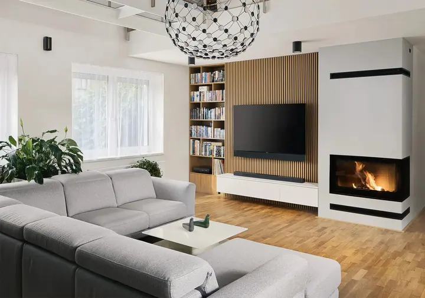

Jmenuji se Marek Ondráček a pod značkou MarkuSnakus fotografuji interiéry a architekturu

. Krása a estetika prostoru mě provází i v krajinářské fotografii a ve svatebních dnech , které fotím s citem pro světlo a atmosféru.
(02) Co fotím
Focení, které má příběh
01
01 / 04
Interiéry a architektura
Fotím interiéry, exteriéry a architekturu tak, aby přitáhly pozornost k danému objektu a pomohly ho prodat. Ať už zájemcům o koupi, hostům restaurace či hotelu, nebo médiím při prezentaci architektonického díla.
Skupinové workshopy v Českém středohoří, Českém Švýcarsku nebo v zimní Praze a fotoexpedice na Island, do Dolomit, Toskánska či Provence. Nabízím také individuální workshop zaměřený na architekturu a online konzultace.
Tištěné fotografie z mé tvorby si můžete pověsit doma nebo v kanceláři. Fotky také licencuji pro weby, sociální sítě, magazíny, pohlednice i reklamní předměty.
Kliknutím fotku zvětšíte · fotografie jsou ilustrační
(04) Postup
Jak to probíhá
Od první zprávy po hotovou galerii.
1
Krok 1 z 4
Poptávka
Napište mi nebo zavolejte, co potřebujete nafotit a k čemu budou fotografie sloužit. Jestli jde o prodej nemovitosti, prezentaci hotelu, restaurace nebo architektonického díla.
2
Krok 2 z 4
Příprava
Domluvíme se na termínu a podle světla i charakteru prostoru naplánuji, jak jednotlivé místnosti a pohledy nafotit.
3
Krok 3 z 4
Focení na místě
Prostor fotím tak, aby vynikly jeho hlavní prvky a atmosféra a aby fotky přitáhly pozornost přesně tam, kam mají.
4
Krok 4 z 4
Úpravy a předání
Každou fotografii pečlivě upravím v grafickém editoru, aby měla co nejvyšší technickou i estetickou kvalitu, a pak vám ji předám.
Prostor, který upoutá na první pohled
(05) Za objektivem
Ahoj, jsem Marek
Zabývám se krásou prostoru prostřednictvím fotografie. Fotografování interiérů, exteriérů a architektury je mým hlavním komerčním zaměřením. Každou fotku tvořím tak, aby přitáhla pozornost k danému místu a pomohla ho prodat, ať už zájemcům o koupi, potenciálním hostům restaurace či hotelu, nebo médiím.
Mé fotografie musí mít co nejvyšší kvalitu, technickou i estetickou. Tenhle záměr prostupuje celou mou prací, od focení na místě až po úpravy v grafickém editoru. Na fotografiích zdůrazňuji a násobím to, co vytvořila příroda či lidská ruka.
K přírodě a krajině mám hluboký vztah. Samotné bytí v ní je pro mě povznášející a má pro mě i meditativní rozměr. Mezi lety 2015 a 2020 jsem pracoval jako produktový specialista Olympus. Dnes fotím na OM System a spolupracuji s ním jako školitel a OM System Ambassador. Pořádám workshopy a fotoexpedice a natáčím videokurzy úprav fotografií.
01Fotím na OM System
02Jsem OM System Ambassador
03Dřív produktový specialista Olympus
04Miluji krajinu a Island
05Vydávám kalendář Krajina Bytí
06Natáčím videokurzy úprav fotografií
Marek
Marek Ondráček · Fotograf interiérů, architektury a svateb
Jaký prostor nafotíme?✳Marek Ondráček✳Jaký prostor nafotíme?✳Marek Ondráček✳Jaký prostor nafotíme?✳Marek Ondráček✳Jaký prostor nafotíme?✳Marek Ondráček✳
Pro koho interiéry a architekturu fotíte?
Pro všechny, kdo potřebují prostor ukázat a prodat: pro majitele a prodejce nemovitostí, pro restaurace a hotely i pro architekty, kteří chtějí své dílo prezentovat médiím.
Fotíte i svatby?
Ano, kromě architektury fotím i svatby. Ozvěte se mi s termínem a místem a domluvíme se na podrobnostech.
Pořádáte fotografické kurzy?
Ano. Pořádám skupinové workshopy v Česku, fotoexpedice do zahraničí, individuální workshopy včetně workshopu zaměřeného na architekturu, online konzultace a videokurzy úprav fotografií. Můžete věnovat i dárkový poukaz.
Můžu si koupit vaši fotografii nebo ji použít?
Ano. Nabízím tištěné fotoobrazy do bytu, domu i kanceláře a licence k fotografiím pro web, sociální sítě, tisk, pohlednice nebo reklamní předměty.
(07) Kontakt
Jaký prostor nafotíme?
Napište pár vět o tom, co si představujete, a termín, který se vám hodí.